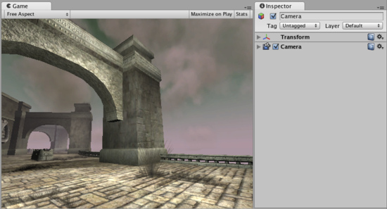
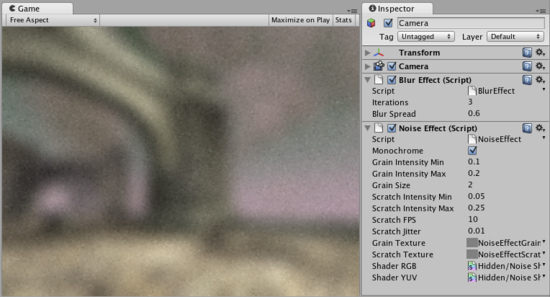

Image Effect Scripts
This group handles all Render Texture-based fullscreen image postprocessing effects. They are only available with Unity Pro. They add a lot to the look and feel of your game. Glow can especially make your game look a lot better without spending much time on artwork.
- Blur image effect
- Color Correction image effect
- Contrast Stretch image effect
- Edge Detection image effect
- Glow image effect
- Grayscale image effect
- Motion Blur image effect
- Noise image effect
- Sepia Tone image effect
- Screen Space Ambient Occlusion (SSAO) image effect
- Twirl image effect
- Vortex image effect
The scene used in above pages looks like this without any image effects applied:

Scene with no image postprocessing effects.
Scene with no image postprocessing effects.
Multiple image effects can be "stacked" on the same camera. Just add them and it will work.

Blur and Noise applied to the same camera. Yay for noisy blur!
Blur and Noise applied to the same camera. Yay for noisy blur!